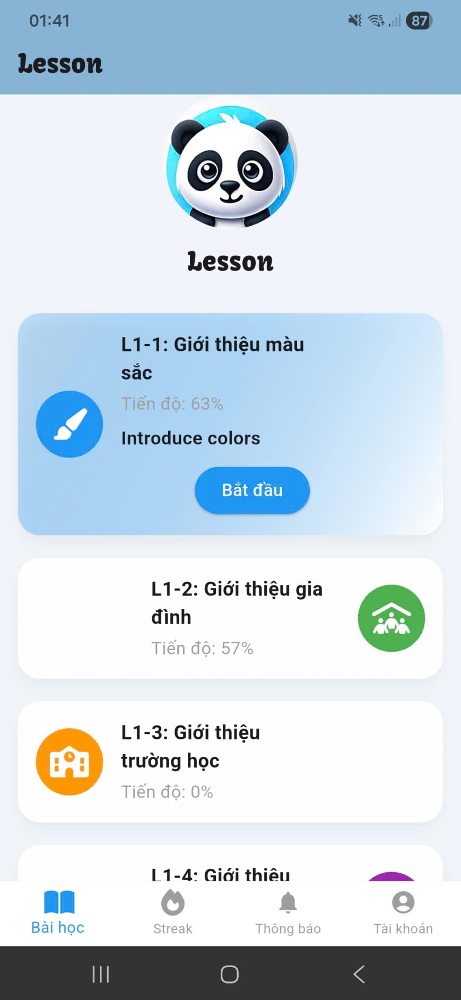

← Quay lại
TotalEnglish – Ứng Dụng Flutter Đầu Tiên
Tháng 3, 2025 · Flutter · Firebase

📌 Tổng Quan Dự Án
TotalEnglish là một ứng dụng di động được thiết kế để giúp người dùng trong khoảng độ tuổi từ lớp 1->5 học tiếng Anh
thông qua việc luyện tập từ vựng, nói và các tương tác giao diện người dùng đơn giản.
Dự án này được xây dựng như một phần trong hành trình học hỏi của tôi với Flutter.
🛠 Công Nghệ Được Sử Dụng
- Flutter để phát triển giao diện người dùng (UI)
- Firebase Authentication
- Firebase Firestore
🚧 Những Thách Thức
Một trong những thách thức lớn nhất là quản lý trạng thái và đồng bộ hóa dữ liệu
giữa giao diện người dùng và Firebase.
🎯 Những Điều Tôi Học Được
- Chu trình vòng đời widget và hệ thống bố cục của Flutter
- Các khái niệm cơ bản về quản lý trạng thái
- Thiết kế giao diện thân thiện
🔗 Liên Kết Dự Án
Xem mã nguồn trên GitHub →